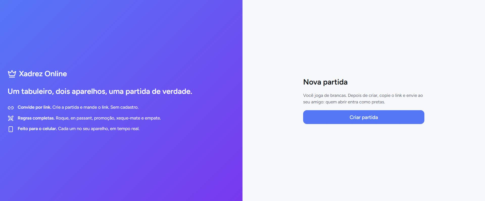

O mapa do site antes de reconstruir.
Dados extraídos do navegador e do pacote exportado. Em capturas incompletas, as cores e fontes observadas podem pertencer apenas à tela de carregamento. Inventário de recursos, arquitetura e pontos que precisam de revisão.
Origem: https://a1-1pagm8nfiumnjkb7vaek0skl2.infusion-ai.cloud/
Os elementos foram capturados do navegador. A fidelidade visual e o comportamento interativo ainda precisam ser conferidos.

Briefing pronto para IA
Use junto com os arquivos do ZIP. O JSON é a fonte estruturada; este HTML é a referência de leitura e inspeção.
ATENÇÃO: o site precisa de validação visual em navegador. Você está recebendo um clone de https://a1-1pagm8nfiumnjkb7vaek0skl2.infusion-ai.cloud/, gerado com SiteCloner Pro. 1. Leia primeiro auditoria/site-design-system.json, depois AUDITORIA-IA.html, sitecloner-pages.json, index.html e os arquivos CSS. 2. Recrie as telas respeitando a ordem das seções, tipografia, tamanhos, espaçamento, hierarquia, paleta e responsividade registrados. 3. Use os recursos efetivamente existentes em /assets, /css e /js. Se uma imagem, vídeo ou ícone não foi capturado, marque como pendência; não invente outro material. 4. Reproduza interações apenas quando houver evidência do comportamento. Formulários, login, checkout e APIs que exijam backend devem ser sinalizados como dependências externas. 5. Valide o resultado em navegador local HTTP comparando com a captura desktop e, quando disponível, com o original, sem presumir fidelidade de recursos ausentes. 6. Não invente tokens ou famílias de ícones. Diferencie valores CSS medidos, estimados e não encontrados. Tecnologias observadas: Tailwind CSS. Fontes observadas: Figtree, Inter, system-ui, sans-serif. Paleta observada: rgb(227, 230, 236), rgb(13, 15, 20), rgb(255, 255, 255), rgb(247, 248, 250), rgb(91, 100, 114), rgb(85, 119, 246). Páginas capturadas: 1. Pendências: 0 erros e 3 avisos. Objetivo: gerar código editável, organizado e o mais fiel possível aos elementos realmente observados.
Páginas, rotas e renderização
| Página | Arquivo local | Captura / diagnóstico |
|---|---|---|
| https://a1-1pagm8nfiumnjkb7vaek0skl2.infusion-ai.cloud/ Xadrez Online | index.html | rendered-dom DOM: 6 elementos estruturais · render aguardado 468 ms |
Paleta observada
Cores extraídas de estilos computados, organizadas por frequência. Não equivalem necessariamente aos tokens oficiais da marca.
Tipografia
Famílias encontradas
| Família observada | Frequência |
|---|---|
| Figtree, Inter, system-ui, sans-serif | 11 |
Font faces declaradas
Nenhuma informação confirmada durante esta captura.
Hierarquia visual dos títulos
| Nível e texto | Fonte / peso | Posição / dimensão |
|---|---|---|
| H1 Nova partida | Figtree, Inter, system-ui, sans-serif 24px · 600 · 32px | 384 × 32 px y: 245 px |
Ordem de seções e componentes
Posições e dimensões medidas no viewport de captura. Layouts responsivos exigem comparação adicional.
| Ordem | Bloco / título | Estrutura e dimensões |
|---|---|---|
| 1 | section Xadrez Online Um tabuleiro, dois aparelhos, uma partida de verdade. Convide por link. Crie a partida e mande o link. Sem cada md:w-1/2 p-6 md:p-6 flex flex-col justify-center gap-6 | 768 × 639 px 3 filhos · 0 imagens · 0 vídeos · 0 botões padding 24px · gap 24px |
| 2 | section Nova partida md:w-1/2 p-6 flex flex-col justify-center items-center gap-4 | 768 × 639 px 1 filhos · 0 imagens · 0 vídeos · 1 botões padding 24px · gap 16px |
Botões e CTAs identificados
| Texto | Tipografia / fundo | Geometria |
|---|---|---|
| Criar partida | Figtree, Inter, system-ui, sans-serif · 16px rgb(85, 119, 246) · raio 12px | 384 × 44 px |
Design tokens, espaçamento e responsividade
Breakpoints identificados: Não identificado. Variáveis CSS lidas no elemento raiz e frequências de estilos computados.
Bordas e raios
| Valor | Frequência |
|---|---|
12px | 1 |
Espaçamentos
| Valor | Frequência |
|---|---|
8px | 2 |
16px | 2 |
24px | 1 |
Sombras
Nenhuma informação confirmada durante esta captura.
Variáveis personalizadas
| Variável CSS | Valor observado |
|---|---|
--container-md | 28rem |
--chart-1 | #5577f6 |
--tw-ring-offset-shadow | 0 0 #0000 |
--tw-inset-shadow-alpha | 100% |
--color-label-strong | #5b6472 |
--tw-ring-shadow | 0 0 #0000 |
--text-2xl | 1.5rem |
--color-warning-bg | #fdf6e7 |
--color-nav | #fdfdfe |
--color-drill-text | #3a4fc4 |
--color-info-border | #c3d8f7 |
--chart-6 | #4257d4 |
--chart-7 | #6f39cc |
--tw-drop-shadow-alpha | 100% |
--text-lg | 1.125rem |
--color-saldo-neg | #c62f2a |
--shadow-overlay | 0 8px 24px -8px #0d0f1429 |
--default-transition-timing-function | cubic-bezier(.4, 0, .2, 1) |
--kpi-bg-amber | #fdf6e7 |
--kpi-bg-blue | #eef4fd |
--color-bg | #f7f8fa |
--text-meta--line-height | 1rem |
--color-nav-hover | #f1f4fa |
--tw-outline-style | solid |
--text-2xl--line-height | calc(2 / 1.5) |
--color-success-border | #a9dfc7 |
--container-5xl | 64rem |
--color-receita | #0f7a52 |
--tw-inset-ring-shadow | 0 0 #0000 |
--text-base--line-height | 1.5 |
--spacing | .25rem |
--text-meta | .75rem |
--color-warning | #9a6a0f |
--color-text-secondary | #5b6472 |
--color-scrim | #0d0f1447 |
--color-info-bg | #eef4fd |
--color-breadcrumb | #3a4fc4 |
--color-tick | #6b7381 |
--font-mono | ui-monospace, SFMono-Regular, Menlo, Monaco, Consolas, "Liberation Mono", "Courier New", monospace |
--color-nav-active | #3a4fc4 |
--color-pago | #0f7a52 |
--color-success | #0f7a52 |
--tracking-wide | .025em |
--text-xl--line-height | calc(1.75 / 1.25) |
--font-weight-semibold | 600 |
--color-danger-border | #f6c3c0 |
--text-sm | .875rem |
--ease-out | cubic-bezier(0, 0, .2, 1) |
--color-primary-bg | #eef1fe |
--color-atrasado | #c62f2a |
--color-pendente | #9a6a0f |
--shadow-card | 0 1px 2px #1012180a, 0 2px 8px -4px #10121812 |
--tw-inset-shadow | 0 0 #0000 |
--tw-ring-offset-color | #fff |
--color-despesa | #c62f2a |
--text-lg--line-height | calc(1.75 / 1.125) |
--color-white | #fff |
--chart-5 | #c02a6d |
--color-danger-bg | #fdf0ef |
--color-surface | #fdfdfe |
--tw-shadow-alpha | 100% |
--radius-sm | 9px |
--color-warning-border | #f0dba6 |
--font-sans | ui-sans-serif, system-ui, sans-serif, "Apple Color Emoji", "Segoe UI Emoji", "Segoe UI Symbol", "Noto Color Emoji" |
--color-primary-hover | #4466e0 |
--tw-border-style | solid |
--color-text | #0d0f14 |
--chart-8 | #c62f2a |
--container-2xl | 42rem |
--tw-shadow | 0 0 #0000 |
--text-sm--line-height | calc(1.25 / .875) |
--kpi-bg-cyan | #e8f7f4 |
--tw-ring-offset-width | 0px |
--color-border | #e3e6ec |
--color-label-muted | #6b7381 |
--color-primary | #5577f6 |
--container-sm | 24rem |
--color-nav-text | #5b6472 |
--color-black | #000 |
--default-font-family | ui-sans-serif, system-ui, sans-serif, "Apple Color Emoji", "Segoe UI Emoji", "Segoe UI Symbol", "Noto Color Emoji" |
--font-weight-medium | 500 |
--container-lg | 32rem |
--kpi-bg-green | #e9f7f1 |
--color-saldo-pos | #0f7a52 |
--chart-3 | #0f7a52 |
--color-primary-light | #5577f673 |
--color-success-bg | #e9f7f1 |
--color-danger | #c62f2a |
--color-on-primary | #fff |
--chart-4 | #9a6a0f |
Ícones e famílias detectadas
4 SVGs inline · 0 referências <use>. A identificação da biblioteca é indicativa.
| Classes SVG | viewBox / traço |
|---|---|
| lucide lucide-crown | 0 0 24 24 · stroke currentColor · fill none |
| lucide lucide-link2 lucide-link-2 shrink-0 mt-0.5 | 0 0 24 24 · stroke currentColor · fill none |
| lucide lucide-swords shrink-0 mt-0.5 | 0 0 24 24 · stroke currentColor · fill none |
| lucide lucide-smartphone shrink-0 mt-0.5 | 0 0 24 24 · stroke currentColor · fill none |
Imagens, vídeos e backgrounds
Nenhuma informação confirmada durante esta captura.
Imagens de fundo encontradas
| Elemento | Propriedade CSS |
|---|---|
| section · md:w-1/2 p-6 md:p-6 flex flex-col justify-center gap-6 | linear-gradient(135deg, rgb(85, 119, 246), rgb(120, 57, 238)) 0% 0% · auto |
Inventário dos arquivos capturados
4 recursos únicos no pacote. A tabela mostra até 400 registros. Consulte o JSON para a lista ampliada.
| Tipo | Arquivo local | Origem / bytes |
|---|---|---|
| css | css/index-XLMv0biV.1azubbs.css | https://a1-1pagm8nfiumnjkb7vaek0skl2.infusion-ai.cloud/_deploys/tenant/409f6628-3e56-478e-81be-d9e21bf89558/app/1cc 27.303 bytes · text/css |
| js | js/index-DsLMDKO1.1g1n5kd.js | https://a1-1pagm8nfiumnjkb7vaek0skl2.infusion-ai.cloud/_deploys/tenant/409f6628-3e56-478e-81be-d9e21bf89558/app/1cc 439.489 bytes · application/javascript |
| css | css/main.2l7kct.css | https://gc.kis.v2.scr.kaspersky-labs.com/E3E8934C-235A-4B0E-825A-35A08381A191/abn/main.css?attr=aHR0cHM6Ly9hMS0xcGF 216.598 bytes · text/css |
| js | js/main.40a6z4.js | https://gc.kis.v2.scr.kaspersky-labs.com/FD126C42-EBFA-4E12-B309-BB3FDD723AC1/main.js?attr=FkIYlaMfnO9BXdLVvkMm7GsZ 134.757 bytes · application/x-javascript |
Referências externas ainda presentes
Referências vistas no DOM que não estão no mapa dos assets salvos. Algumas podem ser scripts externos, links ou recursos deliberadamente não incorporados. Não considere esta lista uma prova isolada de erro.
Erros, avisos e pontos a validar
Respostas descartadas por MIME inválido, recursos indisponíveis, limites de tempo e possíveis telas de carregamento são descritos aqui.
| Tipo | URL / motivo |
|---|---|
| Aviso | https://a1-1pagm8nfiumnjkb7vaek0skl2.infusion-ai.cloud/_deploys/tenant/409f6628-3e56-478e-81be-d9e21bf89558/app/1cc1eeeb-6a39-4015-b052-332489d58736/deploy/8aa89002-46aa-4993-a80d-66da3d81fb {"code":-32000,"message":"No resource with given identifier found"} |
| Aviso | https://fonts.googleapis.com/css2?family=Figtree:wght@400;500;600;700&display=swap {"code":-32000,"message":"No resource with given identifier found"} |
| Aviso | https://gc.kis.v2.scr.kaspersky-labs.com/E3E8934C-235A-4B0E-825A-35A08381A191/abn/main.css?attr=aHR0cHM6Ly9hMS0xcGFnbThuZml1bW5qa2I3dmFlazBza2wyLmluZnVzaW9uLWFpLmNsb3VkLw {"code":-32000,"message":"No resource with given identifier found"} |
Dados Next.js
0 referências de mídia identificadas em __NEXT_DATA__, organizadas em 0 famílias estimadas. Estas referências não equivalem a assets efetivamente baixados. Campos de pageProps: Não identificado.